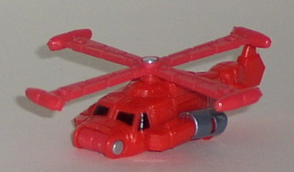
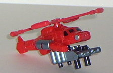
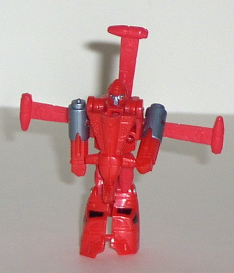
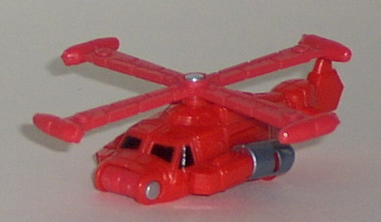
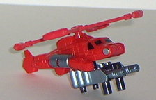
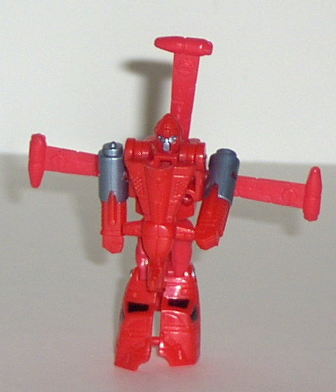
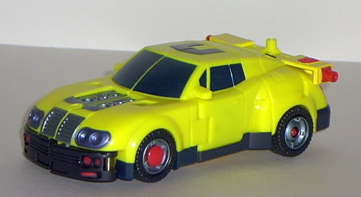
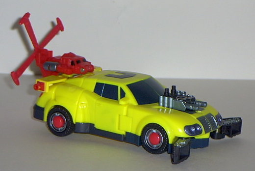
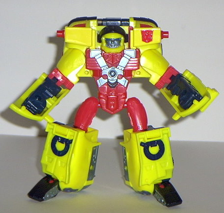
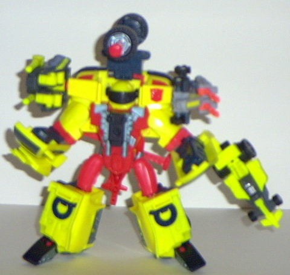

Jolt
Jolt
  
Allegiance : Minicon
Size : Mini-Con
Difficulty of Transformation : Very Easy
Color Scheme : Light red, gunmetal gray-blue, and some black
Rating : 6.9
Jolt



Allegiance
: Minicon
Size
: Mini-Con
Difficulty of Transformation
: Very
Easy
Color Scheme
: Light red, gunmetal
gray-blue, and some black
Rating
: 6.9
Vehicle mode is a helicopter.
This mode is pretty nice, especially in the mold detailing department.
Panels and "bolts" can be found molded throughout. And the rotor spins
very nicely, too, and for quite some time if you give it a good thwack
with your finger. However, this toy suffers from a severe lack of paint
detailing. More paint should have been added besides just the engines and
the windows. Makes this toy look almost like an unfinished prototype, really.
And the robot mode arms are VERY clearly visible on the sides of the helicopter,
detracting from the look quite a bit. Also worthy of note is that Jolt
has not just one Minicon port on the bottom of the helicopter, but TWO-
one in the bottom middle and one in the bottom of the tail end.
In robot mode, Jolt
looks pretty cool, if you ignore the lack of good paint detailing. He can
move at the hips, knees, and shoulders, which is decent articulation for
a Minicon. The insides of his feet are hollow, though, which doesn't exactly
make him the most stable Minicon. And another complaint; the tail-end of
the helicopter, which becomes the chest piece in this mode, doesn't have
any peg to plug into, so it just sorta hangs off Jolt, instead of staying
in a set position. Meh. One thing is that Jolt's face looks very much like
the old G1 toy Powerglide's, which is kinda cool.
Jolt has looks going
for him, and has some excellent mold detailing, but he needs more paint
detailing, and his arms in vehicle mode stick out quite a bit. Otherwise,
he's a cool little guy.
 Hot
Shot
Hot
Shot


Allegiance
: Autobot
Size
: Super-Con
Difficulty of Transformation:
Easy
Color Scheme
: Yellow with a neonish
tint, light black, sparkly dark sea blue, bright red, gunmetal blue-gray,
and sparkly silverish sea blue
Powerlinx ports
: 4 (1 gimmicked)
Rating
: 6.3
Vehicle mode is a sportscar, almost realistic in its design, but still with a bit of a futuristic feel to it. The headlights and the front bumper especially help bring out this "futuristic" feel. This mode is pretty nice in its design- very curved, with nice paint detailing. The only extra in this mode is if you look straight-on at the rear, you can see the top of Hot Shot's robot head. Other than that, pretty flawless in its design.... Or at least, it WOULD be if it wasn't for the HORRENDOUS colors. The yellow is waay to bright to be such a major color, and the bright Playskoolish red in the middle of the otherwise gunmetal blue-gray and black tires doesn't help much either. It just screams, "I'M A TOY", and doesn't really LOOK very good in these colors. The mold detailing is also very sparse in this mode, adding to the "kiddish" feel. As for gimmicks in this mode, Hot Shot cheats a little. He doesn't have a Minicon-activated gimmick; rather, by attaching his engine to the empty space on the front hood, two little grabber claws flip out on the front bumper. Um, whee? Kind of a weak gimmick, since it can't really be used for much. And what especially cheapens it is that you can DO IT YOURSELF without the help of the engine, and it's needed for part of the transformation process. And you can't place the engine on Hot Shot without the grabber claws popping out, which also gets a bit annoying. If you attach Jolt to Hot Shot's back bumper as shown above, he gains a sort of "flight mode". It's alright, but it's nothing spectacular. And it's certainly not a brand new "mode". As for Powerlinx points, Hot Shot has three in this mode- one on the top of the rear end of the car, and one on each side of said rear end. His Autobot symbol is rather poorly painted on the left back panel between two of the Powerlinx ports.


Hot Shot's robot mode
is.... not good. It looks way too chunky and Playskoolish for my tastes,
and the colors obviously don't help. Hot Shot's upper body is especially
bad, as it's all just detailing on the front of the back third of the car
mode. And the arms look especially nonconvincing, due as much to their
odd position as the fact that they only move out and in on the shoulders.
The elbow articulation is also very weird. It moves inward at a point that
it shouldn't, so no sideways posing of the arms there. And the fists are
molded to the sides of the car window panels, something I'm not too fond
of either. Hot Shot's face also looks too chunky, and he's actually got
a sort of smile-grin going there, which I don't like, as it also exemplifies
the Playskoolish look of this mode even more. On the upside, though, you
can flip down his helmet visor to make him look cool there. Also on the
upside is that the mold detailing on the robot parts is very good, even
though the vehicle mode parts still lack enough. However, I'm not fond
of the "seat belt" crossed over Hot Shot's chest. It looks... goofy. You
can plug his car engine into his chest, and it helps the look some, but
not much. Hot Shot's lower body is alright, though, if you ignore the colors.
Nice ball-joint articulation on the hips and knees, although the feet are
kind of on one side of the leg, and don't look quite right. As for this
mode's gimmick, it's actually very cool. Well, except for the location
of the Powerlinx point, that is. Plug a Minicon into Hot Shot's...er...butt,
and...er... push... up, and a huge axle-cannon of DOOM swings up and fires
a missile, all in one smooth motion. VERY cool, especially if you've got
Hot Shot's visor down. If you do it carefully, you can activate this gimmick
without using the Minicon powerlinx point, but it involves being careful
with a couple of switches, so you're better off just using the Minicon.
Hot Shot has a wonderful
main gimmick and vehicle mode design-wise, but his color scheme and robot
mode are pretty bad. As of this writing (12/02), Hot Shot remains my least
favorite "large" Armada toy.
Review by Beastbot